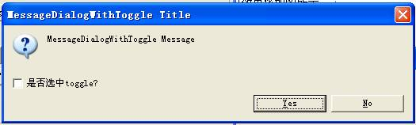

RCP（Rich Client Platform），即富客户端平台，是 Eclipse 提供给开发者的强大的开放性开发平台，允许开发基于 Eclipse 的应用程序，风格将与 Eclipse 相同。由于是基于 Eclipse，因此 Eclipse 中许多有用的系统类，就可以在开发者自己的 RCP 应用中利用起来，这样不仅减少了开发量，也大大提高了系统稳定性。本文介绍了一些笔者在实际开发中用到的 Eclipse 系统类，详细的认识它们可以为你的 RCP 开发提供捷径。
本文将逐一的介绍几个实用类，顺序如下面的列表。
- SafeRunner 的用法
- BusyIndicator 的用法
- PreferencesUtil 的用法
- IDialogSettings 的用法
- FileLocator 的用法
- WorkbenchHelp 的用法
- MessageDialogWithToggle 的用法
- 视图 ViewPart 中的 IMemento
- 重新认识 Display 类
列表的每一部分分别讲述一个实用类的具体用法，文章的附件中会有这些类使用的示例代码，每个实用类对应的使用示例代码以“类名” + UseCase.java 命名 。为了方便读者查看效果，附件程序中每个类的示例代码都有一个对应的按钮，读者可以点击对应的按钮查看效果，附件程序界面如图 1 所示。读者将附件导入 Eclipse 工作空间即可运行。
图 1. 示例程序界面
在 Java 开发中，很多时候所写的语句可能抛出异常，这就需要程序员抒写 try … catch 语句，将异常语句包围，在 catch 语句块中对异常进行处理，在 RCP 应用中对意外抛出的异常一般都需要先记录到日志文件中，方便日后查询，然后根据需求进行别的处理。用传统的方法处理 RCP 中的异常，不仅仅要写 try … catch 语句，还需要编写记录 Eclipse 日志的代码，如果异常语句多了的话，代码就会显得臃肿，不易理解。
Eclipse 提供了一个类，名为 SafeRunner，允许开发者将异常代码放入 SafeRunner 的 run 方法中执行，SafeRunner 默认对异常代码添加 try … catch 语句，捕捉异常并且将异常信息记录日志，同时 SafeRunner 也允许开发者对异常进行其他处理。SafeRunner 的使用方法如清单 1 所示。
清单 1. SafeRunner 的使用
System.out.println("语句 1");
SafeRunner.run(new ISafeRunnable() {
@Override
public void run() throws Exception {
// 异常代码的执行位置
System.out.println("语句 2（可能抛出异常）");
throw new RuntimeException("语句 2 的异常");
}
@Override
public void handleException(Throwable exception) {
// 对异常进行其他处理
exception.printStackTrace();
}
});
System.out.println("语句 3");
|
在 handleException 方法中可以对异常进行其他的处理，比如打印异常信息、记录到数据库等等。
当在 RCP 应用中执行清单 1 中的代码，它的日志文件就会记录抛出的异常，效果如图 2 所示。
图 2. 使用 SafeRunner 的日志文件
使用 SafeRunner 使得 RCP 的异常处理变得规范化，代码量减少，更易维护，无需自己编写日志记录代码。
当试图在执行一个线程任务的同时，主线程停止等待，直到任务执行完毕，这个需求开发者一般会想到使用 Display 的 sync 方法，将任务放入主线程执行，这样执行的缺点是，任务执行时主线程停止响应，给人程序已死的感觉。因此为了解决这个缺点，就可以使用 BusyIndicator 执行任务，它使得任务执行时鼠标显漏斗状，标识主线程忙碌，实际任务在另一线程执行。附件程序中点击”BusyIndicator”按钮就会展示 BusyIndicator 的使用效果，执行的代码如清单 3 所示。
清单 2. BusyIndicator 的示例代码
public static void handleClick(Button button) {
button.setText("Running...");
BusyIndicator.showWhile(button.getDisplay(),
new SleepThread(5000));
button.setText("BusyIndicator");
}
static class SleepThread extends Thread {
private long ms;
public SleepThread(long ms) {
this.ms = ms;
}
public void run() {
try {
sleep(ms);
} catch (InterruptedException e) {
}
}
}
|
用户点击”BusyIndicator”按钮，就改变”BusyIndicator”按钮的标签，改为 Running … , 执行的任务在 SleepThread 中，使用线程的 sleep 方法，模拟任务执行 5 秒。任务执行过程中，主程序虽然没有响应，但是不会有程序已死的感觉，鼠标显示漏斗状。执行任务后按钮的标签恢复成“BusyIndicator”, 鼠标箭头也恢复正常。
Eclipse 提供了首选项扩展点，允许开发者定义自己的首选项集成到 Eclipse 当中（具体的首选项扩展点的扩展方法可以查看 Eclipse 官方开发文档），正常来说，用户可以通过 Eclipse 的 Window->Preferences 菜单打开所有的首选项，然后找到自定义的首选项页。但是如果开发者希望可以通过别的方式打开自定义的首选项页时，就需要利用到 PreferencesUtil，这个类提供了打开指定首选项页的功能，附件程序中定义了一个首选项，id 为 testPreferencesUtilPage，name 为 Test PreferencesUtil Page，清单 4 是使用 PreferencesUtil 打开 id 为 testPreferencesUtilPage 的首选页的方法代码。
清单 3. PreferencesUtil 的示例代码
PreferenceDialog createPreferenceDialogOn = PreferencesUtil.createPreferenceDialogOn(null, "testPreferencesUtilPage", null, null); createPreferenceDialogOn.open(); |
读者可以在附件程序中点击“PreferencesUtil”按钮查看效果，效果如图 3 所示。
图 3. PreferencesUtil 的示例效果
IDialogSettings 是一个为对话框设置提供持久化功能的一个接口，该接口提供了键值对的存储机制，键必须是字符串，值则可以是字符串或者字符串数组（IDialogSettings 提供的方法允许值是非字符串类型，但是 IDialogSettings 的实现会将其他非字符串类型的基本类型转换为字符串类型，然后保存）。开发者希望在对话框关闭时候保存状态，打开对话框恢复状态时，就可以利用 IDialogSettings 接口了。附件程序使用 InputDialog，将用户输入的内容保存到 IDialogSettings 实例中，使用 IDialogSettings 的 save 方法将 IDialogSettings 中的信息保存到本地文件，在第二次打开 InputDialog 时，又使用 IDialogSettings 的 load 方法加载设置。代码如清单 5 所示。
清单 4. IDialogSettings 的使用
private static IDialogSettings ds = new DialogSettings("myds");
public static void handleClick() {
String fileName = "c:/save.xml";
if (new File(fileName).exists())
{
try {
ds.load(fileName);
} catch (IOException e1) {
e1.printStackTrace();
}
}
InputDialog id = new InputDialog(null, "IDialogSettings Title",
"IDialogSettings Message", ds.get("iduc") == null ? "" : ds.get("iduc"), null);
if (id.open() == Window.OK)
{
ds.put("iduc", id.getValue());
}
try {
ds.save(fileName);
} catch (IOException e) {
e.printStackTrace();
}
}
|
在 InputDialog 中输入 helloworld, 点击 OK，打开清单 5 中保存的文件 c:/save.xml，它的内容如清单 6 所示。可以看出 IDialogSettings 中的信息通过调用 save 方法，保存成了一个 XML 文件格式。
清单 5. save.xml 的内容
<?xml version="1.0" encoding="UTF-8"?> <section name="myds"> <item value="helloworld" key="iduc"/> </section> |
清单5中，IDialogSettings 的实例是自己新建，它的 save 和 load 操作需要开发人员自己控制，有时候为了方便，我们可以使用已经有的 IDialogSettings 实例，让平台负责它们的读写，如 JavaPlugin.getDefault().getDialogSettings() 就可以获得 JavaPlugin 中的 IDialogSettings 实例，加载保存都归 Java 插件管理。
在 Eclipse 中编辑项目时，往往会根据需要在项目中新建一些文件，如 properties 文件等等，当我们需要在 RCP 运行时找到这些文件时，就需要利用 FileLocator 类。为此，附件程序中新建一个 properties 文件（fileLocator.properties）在项目的根目录下，内容为 filelocator=FileLocatorUseCase，接下来利用 Filelocator 找到这个属性文件，读取该文件内容，使用 Java 的资源 API 获取键为 filelocator 的 FileLocatorUseCase 值，并弹出对话框显示，代码如清单 7 所示。
清单 6. FileLocator 的使用
URL location = FileLocator.find(Platform
.getBundle("eclipse_system_class"), new Path(
"fileLocator.properties"), null);
PropertyResourceBundle bundle = null;
InputStream is = null;
String aboutText = "";
if (location != null) {
try {
is = location.openStream();
bundle = new PropertyResourceBundle(is);
} catch (IOException e) {
bundle = null;
} finally {
try {
if (is != null)
is.close();
} catch (IOException e) {
}
}
}
if (bundle != null) {
try {
// 值
aboutText = bundle.getString("filelocator");
MessageDialog.openInformation(null, "FileLocator", aboutText);
} catch (MissingResourceException e) {
}
}
|
通过插件的 ID，使用 Platform 类的 getBundle 方法获取插件的 Bundle，FileLocator 的 find 方法相对 Bundle 的根目录寻找文件（fileLocator.properties），将获取的文件输入流封装成 PropertyResourceBundle，这样就可以根据键值 filelocator 获得 FileLocatorUseCase 值了。
在了解 WorkbenchHelp 之前，读者需要了解 Eclipse 中的帮助扩张点，这个扩张点的目的是为开发者提供自定义帮助内容的方法，该扩展点的具体使用方法可以查看 Eclipse 官方开发文档。WorkbenchHelp 类提供了快捷的 API，用以设置、显示、获得帮助扩展点的帮助。附件程序展示了如何为视图的 Composite 添加帮助，当焦点落在 Composite 时，按 F1 键，会显示定义好的帮助内容。或者点击“WorkbenchHelp”按钮，也会显示帮助内容。显示效果如图 4 所示。
图 4. 使用 WorkbenchHelp 显示帮助
为视图 Composite 设置 F1 帮助的代码如清单 8 所示。
清单 7. 设置 F1 显示帮助
public void createPartControl(Composite parent)
{
Composite com = new Composite(parent, SWT.NONE);
...
WorkbenchHelp.setHelp(com, "eclipse_system_class.contexthelp");
}
|
WorkbenchHelp 的 setHelp 方法为控件设置帮助，它的第二个参数值 eclipse_system_class.contexthel 中的 contexthelp，是附件程序扩展 org.eclipse.help.contexts 扩展点定义的 context 的 id，eclipse_system_class 则为附件程序的插件 ID，清单 8 利用 WorkbenchHelp 为 Composite 绑定了帮助，点击 F1 时显示 id 为 contexthelp 的帮助内容。当试图在其他事件（不是点击 F1）时显示帮助，WorkbenchHelp 提供了直接显示帮助的方法：WorkbenchHelp.displayHelp("eclipse_system_class.contexthelp"); 在任何事件监听器中调用 displayHelp 方法，都可以显示帮助内容。
MessageDialogWithToggle 是一个带有 CheckBox 的提示对话框，MessageDialogWithToggle 不仅保存了用户点击的按钮信息，还保存了用户是否选中了 ChekBox。MessageDialogWithToggle 在 Eclipse 中的使用例子很多，比如关闭 Eclipse 时，会弹出如图 5 的对话框。该对话框就是 MessageDialogWithToggle 的实例。
图 5. 退出 Eclipse 时的提示对话框
MessageDialogWithToggle 对话框适用于一个对话框包含两个提示问题的情况下，它的使用代码如清单 9 所示。
清单 8. MessageDialogWithToggle 的使用
MessageDialogWithToggle dialogWithToggle = new MessageDialogWithToggle(null,
"MessageDialogWithToggle Title", null, "MessageDialogWithToggle Message",
MessageDialog.QUESTION, new String[] { IDialogConstants.YES_LABEL,
IDialogConstants.NO_LABEL}, 0, "是否选中 toggle?", false);
if (dialogWithToggle.open() == IDialogConstants.YES_ID)
{
boolean toggleState = dialogWithToggle.getToggleState();
MessageDialog.openInformation(null,
"MessageDialogWithToggle", "是否选中 toggle " + toggleState);
}
|
执行清单 9 的代码效果将如图 6 所示。
图 6. MessageDialogWithToggle 的示例效果

Eclipse 的工作台 Workbench 被关闭的时候，会执行每个视图 (ViewPart) 的 saveState 方法，一个 IMemento 对象就会传入到 saveState 方法中，在 IMemento 对象中可以存储整型、字符串型、浮点型等数据，我们就可以将一些状态信息等存储到 IMemento 中，平台会将这些数据存储到 org.eclipse.ui metadata 目录下的 workbench.xml 文件中。下次打开视图时，平台还会从 workbench.xml 重新读取 IMemento 对象，并且传入视图的 init 方法。那么 init 方法就可以恢复上一次关闭前的状态了。
为了实现上述保存状态再恢复状态的功能，需要重写视图（ViewPart）的 init 和 saveState 方法，类似代码如清单 10 所示。
清单 9. init 与 saveState 的重写
public void init(IViewSite site, IMemento memento) throws PartInitException
{
super.init(site, memento);
if (memento != null){
String initData = memento.getString("initdata");
// 每一次打开都会获得这个 initData.
}
}
public void saveState(IMemento memento)
{
// 改变状态的话，就在关闭的时候存储到 IMemento 中
if (memento != null){
memento.putString("initdata", "IMemento init");
}
}
|
另外，打开视图的时候先执行 init，再执行视图的 createPartControl 方法，也就是说 init 的执行在创建组件之前，因此可以保存 init 方法的 IMemento 对象参数的引用，在 createPartControl 方法里使用，获得 IMemento 中存放的信息，这样就可以恢复上一次关闭前一些组件的属性值等。
Display 在 RCP 中具有很重要的地位，它的两个方法 sync 和 async 是同步和异步方法，sync 是将代码块立刻放入主线程执行，async 是在主线程空闲的时候再放入主线程执行。这两个方法在非主线程中更新 UI 时被大量用到。
Display 还有很多别的方法会被人忽略，但是了解这些方法或许在以后的开发中有很大的帮助，
addFilter方法用于添加全局监听器，任何在 RCP 应用中发生的同类事件都会触发 addFilter 的监听器。addFilter的使用示例代码如清单 11 所示。
清单 10. addFilter 使用示例
display.addFilter(SWT.MouseDown, new Listener() {
@Override
public void handleEvent(Event e)
{
System.out.println("filter mouse down");
}
});
|
Display 提供了寻找控件的方法，叫 findWidget，用于通过句柄快速寻找控件，在控件非常复杂的情况下，可以通过记录控件的句柄号 (Control 的 handle 属性 )，调用 findWidget 方法，快速获得控件，示例代码如清单 12 所示。
清单 11. findWidget 使用示例
Button displayBtn = … ; Control d = (Control)display.findWidget(displayBtn.handle); System.out.println(d == displayBtn); |
Display 的 getFocusControl方法返回当前应用中获得焦点的 Control 对象。
Display 的 timerExec方法用于在指定毫秒数结束以后执行一段代码，为 RCP 程序提供定时执行的功能，它的代码如清单 13 所示。
清单 12. timerExec 使用示例
// 在 5 秒后执行 Runnable 代码
display.timerExec(5000, new Runnable() {
@Override
public void run()
{
System.out.println("timerExec");
}
});
|
Display 的 disposeExec方法是程序退出时候的钩子，在 Display 被销毁的时候触发执行，通过这个方法允许你在程序退出时做一些收尾工作，它的示例代码如清单 14 所示。
清单 13. disposeExec 使用示例
display.disposeExec(new Runnable(){
@Override
public void run()
{
System.out.println("disposeExec");
}
});
|
本文介绍了几个 RCP 开发中可能被用到的实用类，对这些类进行了讲解和代码示例分析，通过文章的介绍，相信读者可以从中掌握这些类的使用方法，在未来的 RCP 开发中事半功倍。由于本人知识水平有限，文章中倘若有错误的地方，欢迎联系我批评指正。
| 描述 | 名字 | 大小 | 下载方法 |
|---|---|---|---|
| 样例代码 | eclipse-system-class.rar | 38KB | HTTP |
学习
- 参考 Eclipse 官方网站首页，查看 Eclipse 相关技术的最新信息。
- 查看“Eclipse 帮助文档”，查看 Eclipse 中类的 API 定义以及其他的开发帮助文档。
- 查看网站“Eclipse Source Analysis”，查看 Eclipse 的源码分析。
- 访问 developerWorks Open source 专区获得丰富的 how-to 信息、工具和项目更新以及最受欢迎的文章和教程，帮助您用开放源码技术进行开发，并将它们与 IBM 产品结合使用。
- 随时关注 developerWorks 技术活动和网络广播。
讨论
- 欢迎加入 My developerWorks 中文社区。